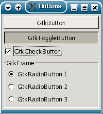
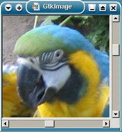
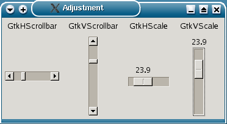
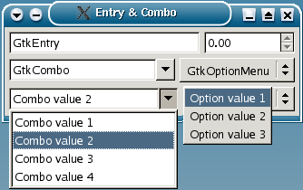
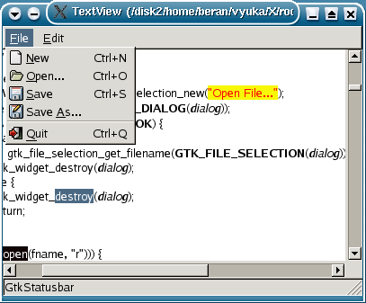
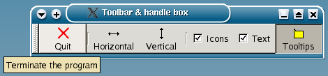
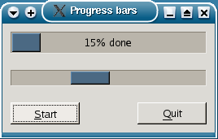
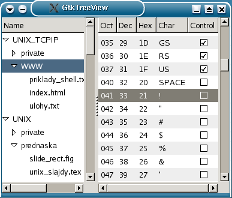
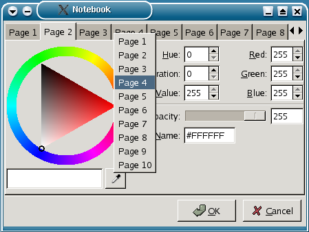

Dnes se podíváme, jaké widgety jsou v GTK+ k dispozici. Nebudeme se pøíli¹ pou¹tìt do podrobností, proto¾e tøídy widgetù mají èasto desítky metod a podrobný výklad by byl pøíli¹ dlouhý a asi také dost nudný. Proto se zamìøíme jen na nejdùle¾itìj¹í vlastnosti widgetù. Detaily je mo¾né nalézt v referenèní dokumentaci GTK+. Ukázkové programy demonstrující jednotlivé widgety se dají najít na http://www.gtk.org/. Dal¹í programy jsou na adrese http://www.ms.mff.cuni.cz/~beran/vyuka/X/prog/gtk/.
Widget potøebuje X okno, aby mohl kreslit na obrazovku a pøijímat události. Nìkteré widgety nepotøebují dostávat události od X serveru. Aby se ¹etøily systémové zdroje X serveru, nemají takové widgety vlastní X okno a pro kreslení pou¾ívají okno rodièovského widgetu. Pro testování, zda má widget X okno, se pou¾ívá makro GTK_WIDGET_NO_WINDOW. Podobných maker pro zji¹tìní vlastností widgetù existuje více. GTK_WIDGET_IS_SENSITIVE testuje, jestli bude widget reagovat na podnìty u¾ivatele. Pøi programování GUI je obvyklé, ¾e s prvky rozhraní, napø. polo¾kami menu, které odpovídají doèasnì nepøístupným funkcím programu, nemù¾e u¾ivatel pracovat. Takové widgety jsou i graficky odli¹eny, standardnì jsou zobrazeny nevýraznou ¹edou barvou. Vypínat a zapínat interakci widgetu s u¾ivatelem umo¾òuje funkce gtk_widget_set_sensitive. Chování widgetù ovlivòují je¹tì jiné pøíznaky, napø. focus (widget bude dostávat vstup z klávesnice), nebo default (widget zareaguje na klávesu Enter, i kdy¾ má focus jiný widget, obvykle se pou¾ívá pro tlaèítko OK v dialogu). S pøíznaky manipulují makra GTK_WIDGET_SET_FLAGS a GTK_WIDGET_UNSET_FLAGS.
Témìø v ka¾dé aplikaci pou¾ívající GTK+ se vyskytují tlaèítka. Obyèejná tlaèítka typu GtkButton se vyskytují pøedev¹ím v dialozích, slou¾í pro uzavøení dialogu a potvrzení (OK), resp. zru¹ení (Cancel) nastavených hodnot. Tlaèítko obvykle obsahuje nìjaký text nebo ikonu. Nicménì je to kontejner – potomek GtkBin – proto mù¾e obsahovat libovolný widget, napø. hbox s ikonou a textem. Tlaèítko s textem se vytvoøí funkcí
GtkWidget* gtk_button_new_with_mnemonic(const gchar *label);Znak, pøed kterým je v label podtr¾ítko '_', bude podtr¾ený a bude fungovat jako akcelerátor (spolu s klávesou Alt). Pøi stisku tlaèítko generuje signál "clicked". Z obyèejného tlaèítka je odvozené GtkToggleButton, které se pøepíná mezi dvìma stavy (stisknuto/nestisknuto) a pøi tom generuje signál "toggled". Aktuální stav tlaèítka se dá zjistit pomocí gtk_toggle_button_get_toggled a nastavit voláním gtk_toggle_button_set_toggled. Variantou toggle button je GtkCheckButton, které se li¹í pouze vzhledem. Z nìho je dále odvozené GtkRadioButton. Tento typ tlaèítek se pou¾ívá ve skupinách propojených pomocí spojového seznamu GSList definovaného v knihovnì GLib. V¾dy pouze jedno tlaèítko ze skupiny je aktivní. Vzhled jednotlivých typù tlaèítek je vidìt na obr. 1. Tlaèítka GtkRadioButton jsou na obrázku vlo¾ená ve vboxu a ten je v GtkFrame, co¾ je kontejner zobrazující kolem vlo¾ených widgetù rámeèek s nadpisem.

Obr. 1: Tlaèítka
Obsah widgetu jako je velký obrázek, tabulka, nebo del¹í soubor v textovém editoru se nezobrazí celý najednou. Pro rolování viditelné èásti obsahu se pou¾ívá kontejner GtkScrolledWindow. Tento widget má automaticky horizontální (GtkHScrollbar) a vertikální (GtkVScrollbar) scrollbar. Nìkteré widgety, jako GtkTreeView nebo GtkTextView, poèítají s podporou rolování a dají se do GtkScrolledWindow vlo¾it pøímo funkcí gtk_container_add. Jiné widgety, napø. GtkImage, nejsou pøipravené na rolování. Mezi takový widget a GtkScrolledWindow je tøeba vlo¾it GtkViewport voláním gtk_scrolled_window_add_with_viewport. Tyto dvì metody nelze zamìòovat. Pokud bychom pro GtkTreeView pou¾ili viewport, fungovalo by sice rolování seznamu, ale posunovaly by se i nadpisy sloupcù, co¾ není moc vhodné. Widget GtkScrolledWindow s vlo¾eným obrázkem typu GtkImage ukazuje obr. 2.

Obr. 2: GtkScrolledWindow obsahující GtkImage
Pro komunikaci mezi scrollbary a scrolled window se pou¾ívá GtkAdjustment. Není to widget, ale objekt, který udr¾uje parametry pro rolování. Lze k nìmu pøipojit libovolný poèet rolovacích oken a scrollbarù. Posun jednoho z nich zmìní polo¾ku value a zavolá gtk_adjustment_value_changed. Tato funkce zpùsobí poslání signálu "value_changed". Signál dostanou ostatní widgety pøipojené k adjustmentu a upraví svùj stav. Pøi zmìnì nìkteré jiné polo¾ky adjustmentu – minimální nebo maximální hodnoty, øádkového posunu, stránkového posunu nebo velikosti stránky – je tøeba volat gtk_adjustment_changed. Tím se vygeneruje signál "changed" pro v¹echny widgety pøipojené k adjustmentu. Podobné scrollbarùm jsou widgety GtkHScale a GtkVScale. Pou¾ívají se pro nastavení nìjaké numerické hodnoty. Aktuální hodnota a pøípustný interval jsou ulo¾ené v adjustmentu. Widgety typu scrollbar a scale, v¹echny napojené na jeden adjustment, jsou na obr. 3.

Obr. 3: GtkScrollbar a GtkScale
Jeden z nejjednodu¹¹ích widgetù je GtkLabel – statický text, který neinteraguje s u¾ivatelem. Obvykle se pou¾ívá pro popisky polo¾ek dialogù a jako souèást jiných widgetù, napø. nápisy na tlaèítkách (GtkButton). Label mù¾e být i víceøádkový, s automatickým zalamováním øádkù. V dialogových oknech se pro zadávání hodnot pou¾ívají kromì ji¾ zmínìných tlaèítek widgety typu GtkEntry pro vstup jednoho øádku textu. Entry podporuje obvyklé editaèní klávesy, oznaèování textu a cut&paste pomocí my¹i. Ze základního GtkEntry je odvozený GtkSpinButton. To je vstupní øádek specializovaný na zadávání èísel. Pro ulo¾ení aktuální hodnoty a povoleného intervalu pou¾ívá adjustment. Vedle editaèního øádku zobrazuje dvì ¹ipky, pomocí nich¾ je mo¾né hodnotu zvìt¹ovat nebo zmen¹ovat. Dal¹í variantou je GtkCombo. V nìm lze kromì napsání textu z klávesnice vybírat z rozbalovacího seznamu øetìzcù zadaného ve formì spojového seznamu GList. Pøíkazem
gtk_entry_set_editable(GTK_ENTRY(GTK_COMBO(combo)->entry), FALSE);se dá zakázat editace textu a povolit pouze hodnoty v seznamu. Alternativnì lze pro výbìr øetìzce ze seznamu pou¾ít widget GtkOptionMenu. V nìm se mo¾né hodnoty zadávají ve formì menu (GtkMenu pøipojené k widgetu pomocí gtk_option_menu_set_menu). Obrázek 4 ukazuje widgety typu entry, spin button, combo box a option menu.

Obr. 4: GtkEntry, GtkSpinButton, GtkCombo a GtkOptionMenu
Hlavní okno aplikace je obvykle widget typu GtkWindow. Window manager k nìmu pøidá rámeèek, který okno zvýrazòuje a obsahuje ikony pro zavøení, minimalizaci, maximalizaci, apod. Titulek v rámeèku okna se nastavuje voláním gtk_window_set_title. V oknì je typicky vbox. Do jeho horní èásti se umís»uje pruh menu (GtkMenuBar), pod nìj toolbar (GtkToolbar v GtkHandleBox). Ve spodní èásti okna je stavový øádek (GtkStatusbar). Na obr. 5 je pøíklad takto koncipovaného hlavního okna aplikace, kde v hlavní èásti okna mezi toolbarem a stavovým øádkem je textový editor GtkTextView.

Obr. 5: Hlavní okno aplikace s menu, toolbarem, stavovým øádkem a textovým editorem
Menu je obvykle kombinace hlavního pruhu menu typu GtkMenuBar, pøi výbìru nìkteré polo¾ky se rozbalí svislé menu GtkMenu. Struktura rozbalovacích menu mù¾e mít více úrovní. Tøída GtkMenu se pou¾ívá i pro kontextové popup menu, typicky aktivované pravým tlaèítkem my¹i, a jako seznam polo¾ek v GtkOptionMenu. Struktura menu v aplikaci se dá vygenerovat postupným vytváøením jednotlivých widgetù. Vodorovné menu vytvoøí gtk_menu_bar_new, jednotlivé jeho polo¾ky jsou typu GtkMenuItem a pøidávají se pomocí gtk_menu_item_new_with_mnemonic a gtk_menu_shell_append. Svislé menu se vytváøí funkcí gtk_menu_new. Polo¾ky se do nìj vkládají stejnì jako do GtkMenuBar. Pøipojení GtkMenu k polo¾ce widgetu GtkMenuBar nebo k polo¾ce GtkMenu vy¹¹í úrovnì zajistí funkce gtk_menu_item_set_submenu. Alternativní metodou vytvoøení celé struktury menu je pou¾ití menu factory. V poli struktur GtkItemFactoryEntry jsou definovány jednotlivé polo¾ky. Menu podle této definice vygeneruje posloupnost volání funkcí
static GtkItemFactoryEntry items[] = { ... };
GtkWidget *window, *bar;
GtkItemFactory *factory;
GtkAccelGroup *accel;
accel = gtk_accel_group_new();
factory = gtk_item_factory_new(GTK_TYPE_MENU_BAR, "", accel);
gtk_item_factory_create_items(factory, sizeof(items)/sizeof(*items),
items, (gpointer)"callback_data");
gtk_window_add_accel_group(GTK_WINDOW(window), accel);
bar = gtk_item_factory_get_widget(factory, "");
Do toolbaru se vkládají tlaèítka pro aktivaci nejpou¾ívanìj¹ích funkcí programu. Ka¾dé tlaèítko obsahuje volitelnì text, ikonu, nebo oboje. Kromì obyèejných tlaèítek se dají do toolbaru vlo¾it i toggle button, radio button, nebo libovolný widget. V mnoha aplikacích se dá toolbar my¹í „utrhnout“ z okna. Odtr¾ený toolbar se stane samostatným top-level oknem. Pøesunutím na pùvodní místo se toolbar pøipojí zpìt do okna. Tuto funkci zaji¹»uje kontejner GtkHandleBox. Lze do nìj sice vlo¾it jakýkoliv widget, ale obvykle se do nìj pøidává toolbar.
Stavový øádek slou¾í k zobrazování rùzných zpráv pro u¾ivatele. Obsahuje zásobník zpráv, v nìm¾ lze pøidávat a mazat. Zobrazena je v¾dy zpráva na vrcholu zásobníku, tj. poslední vlo¾ená nesmazaná zpráva. Platí pravidlo, ¾e ve stavovém øádku se zobrazují ménì záva¾ná hlá¹ení, proto¾e je u¾ivatel mù¾e snadno pøehlédnout. Pro dùle¾ité zprávy je lep¹í pou¾ít samostatné modální dialogové okno.
K prvkùm u¾ivatelského rozhraní je u¾iteèné pøidat tooltipy, tj. krátké vysvìtlující texty zobrazované, kdy¾ se na widgetu po urèitou dobu zastaví kurzor my¹i. Funkce gtk_tooltips_new vytvoøí skupinu tooltipù typu GtkTooltips. Jednotlivé tooltipy pro rùzné widgety se vytváøejí a pøidávají do skupiny pomocí gtk_tooltips_set_tip. Na obr. 6 je tooltip pøipojený k tlaèítku v toolbaru.

Obr. 6: Toolbar v handle boxu se zobrazeným tooltipem
Pøi programování GUI platí zásada, ¾e kdy¾ program dìlá nìjakou déle trvající akci a v jejím prùbìhu neinteraguje s u¾ivatelem, mìl by to dát vizuálnì najevo. Pro operace o délce øádovì jednotky sekund se hodí zmìnit kurzor na „hodiny“. Pro del¹í operace je lep¹í pou¾ít progress bar GtkProgressBar. Ten ukazuje odhad, kolik u¾ je hotovo a kolik zbývá do konce. Odhad by mìl být dostateènì pøesný. Velmi ¹patnì pùsobí, kdy¾ bìhem 2 sekund na progress baru naskoèí 98% a zbývající dvì procenta trvají pùl hodiny. Kdy¾ nelze zbývající èas dostateènì správnì odhadnout, je lep¹í progress bar pøepnout do „activity mode“. Pak se zobrazuje pouze kmitající blok jako indikace, ¾e se stále nìco dìje a program nezamrzl. Obì varianty progress baru jsou na obr. 7.

Obr. 7: Progress bar
Pro zobrazení a editaci textu existuje v GTK+ widget GtkTextView. GTK+ pou¾ívá internì pøi práci s textem Unicode v kódování UTF-8. V knihovnì GLib jsou funkce pro pøekódování mezi UTF-8 a aktuálním locale. Text není ulo¾en pøímo ve widgetu GtkTextView, ale je v samostatném objektu typu GtkTextBuffer. Kromì tìchto dvou tøíd se pøi práci s textem pou¾ívají je¹tì iterátory GtkTextIter, znaèky GtkTextMark a tagy GtkTextTag. Iterátor je ukazatel na znak pou¾ívaný pøi rùzných operacích s textem. Dùle¾ité je, ¾e pøi jakékoliv zmìnì textu se iterátor zneplatní. Naopak znaèka zùstává platná i po zmìnì obsahu textového bufferu. Je to jakýsi virtuální, neviditelný kurzor. Znaèky mají jména, "insert" je pozice viditelného kurzoru, "selection_bound" je druhý konec vybrané èásti textu. Tag definuje atributy úseku textu, napø. font, barvu písma nebo pozadí. Ukázka widgetu GtkTextView je na obr. 5.
Widget GtkTreeView zobrazuje seznam – posloupnost øádkù, data v øádcích jsou uspoøádána do sloupcù, v¹echny polo¾ky ve stejném sloupci mají stejný typ. Stejný widget umí zobrazovat i stromovou strukturu, u¾ivatel mù¾e pomocí my¹i otevírat jednotlivé úrovnì stromu. Zobrazování seznamù a stromù je rozdìlené na ètyøi èásti. Hlavní je widget GtkTreeView. K nìmu je pro ka¾dý sloupec vytvoøen objekt GtkTreeViewColumn, který obsahuje informace o polo¾kách v tomto sloupci: nadpis sloupce, renderer a specifikace polo¾ky (prvku datové struktury odpovídající celému øádku) zobrazené ve sloupci. Renderer je potomek tøídy GtkCellRenderer. Umí nakreslit jednu polo¾ku v jednom øádku. Model (GtkListStore nebo GtkTreeStore) je datová struktura, v ní¾ jsou ulo¾ena data urèená k zobrazení. Na obr. 8 je ukázka seznamu i stromu. Dva widgety GtkTreeView jsou vlo¾eny v kontejneru GtkHPaned, jen¾ své dva synovské widgety zobrazuje v oddìlených panelech. Velikost panelù mù¾e u¾ivatel mìnit posunem pøepá¾ky mezi nimi.

Obr. 8: Strom a seznam GtkTreeView ve dvou panelech GtkHPaned
Zatím jsme se nezmínili o nìkolika u¾iteèných kontejnerových widgetech. Jedním z nich je GtkEventBox. Pou¾ívá se v pøípadì, ¾e máme widget bez X okna (napø. GtkLabel) a potøebujeme v nìm pøijímat události. Øe¹ením je takový widget vlo¾it do event boxu, co¾ je widget, který sám o sobì nic nedìlá, ale má X okno. Proto mù¾e dostávat události od X serveru. Pro skupiny tlaèítek se pou¾ívají tøídy GtkHButtonBox a GtkVButtonBox. Jsou to boxy, u kterých lze buï jednotlivì, nebo pro v¹echny button boxy v celé aplikaci, nastavovat parametry pro rozmístìní synovských widgetù. GtkAligment dovoluje pro synovský widget nastavovat pozici a velikost relativnì vzhledem ke kontejneru. GtkFixed slou¾í pro vkládání synovských widgetù na pevnì zadané souøadnice. V dialogových oknech s mnoha polo¾kami se èasto pou¾ívá GtkNotebook. Je to kolekce stránek se zálo¾kami. Kliknutím na zálo¾ku lze vybrat urèitou stránku. Na obr. 9 je ukázka notebooku v dialogovém oknì, kde v aktuálnì vybrané stránce je vlo¾en standardní widget GtkColorSelection pro nastavení barvy.

Obr. 9: Kolekce stránek (GtkNotebook)
Pro dialogová okna se pou¾ívá widget GtkDialog. Dialog je top-level okno, proto je odvozen z GtkWindow. Dialogové okno má dvì èásti oddìlené horizontální èárou (separátorem GtkHSeparator). Horní èást (GtkDialog.vbox) je oblast pro vkládání widgetù pro zobrazení a zadávání dat, jako jsou GtkEntry, GtkCheckButton, apod. Do spodní èásti (GtkDialog.action_area) se vkládají tlaèítka pro uzavøení dialogu, jako „OK“, „Cancel“, „Yes“ nebo „No“. Pokud jsou tlaèítka vlo¾ena pomocí gtk_dialog_add_button nebo gtk_dialog_add_buttons, vygeneruje stisk tlaèítka signál "response" s parametrem (response ID) pøiøazeným tlaèítku pøi pøidání do dialogu. Enumerace GtkResponseType definuje standardní hodnoty response. Dialogy jsou modální nebo nemodální. Nemodální dialog je po vytvoøení zobrazen stejnì jako normální top-level okno aplikace pomocí gtk_widget_show_all. V handleru signálu "response" se pak pøeètou hodnoty nastavené u¾ivatelem. Kdy¾ je na obrazovce nemodální dialog, u¾ivatel mù¾e pracovat i s ostatními okny programu. S modálními dialogy se pracuje pomocí funkce gtk_dialog_run.
resp = gtk_dialog_run(GTK_DIALOG(dialog));
switch(resp) {
case GTK_RESPONSE_NONE: ...
case GTK_RESPONSE_OK: /* pøeètení u¾ivatelem nastavených hodnot */
case GTK_RESPONSE_CANCEL: ...
case GTK_RESPONSE_DELETE_EVENT: ...
}
gtk_widget_destroy(dialog);
Volání gtk_dialog_run zobrazí dialog a spustí rekurzivnì cyklus
zpracování událostí gtk_main. Stisk nìkterého tlaèítka nebo zru¹ení
dialogu zpùsobí ukonèení rekurzivní instance gtk_main a návrat
z gtk_dialog_run s response ID odpovídajícím stisknutému tlaèítku.
Zatímco je modální dialog zobrazen, u¾ivatel nemù¾e pracovat s ¾ádným jiným
top-level oknem programu. Výhoda modálních dialogù je, ¾e vytvoøení a
zobrazení dialogu, èekání na stisk tlaèítka a pøeètení u¾ivatelem nastavených
hodnot lze zabalit do jedné funkce. U nemodálního dialogu je potøeba na jednom
místì programu dialog zobrazit a jinde (v handleru signálu
"response") pøeèíst hodnoty. Z pohledu programátora jsou modální
dialogy pohodlnìj¹í, nicménì pro u¾ivatele jsou omezující, proto¾e blokují
zbytek aplikace. Proto je vhodnìj¹í pou¾ívat spí¹e nemodální dialogy.
Pøíkladem situace, kdy je naopak lep¹í modální dialog, je zobrazení chybové
zprávy, u které chceme mít jistotu, ¾e ji u¾ivatel nepøehlédne.
Seznam widgetù v tomto èlánku není vyèerpávající. V GTK+ jsou je¹tì dal¹í widgety, jako standardní dialogy pro výbìr jmen souborù, barev nebo fontù. Toolkit obsahuje také mnoho tøíd, z nich¾ se obvykle nevytváøí instance, ale jsou to bázové tøídy pro widgety s podobnými vlastnostmi. Napøíklad z GTKBox jsou odvozené GtkButtonBox, GtkHBox a GtkVBox.